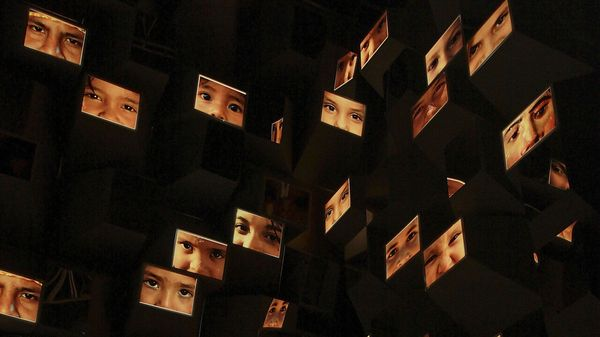

Jul 09, 2026 05:23 AM

The Face. By Fay Bound-Alberti. Grand Central Publishing; 288 pages; $30. Allen Lane; £25
CAST YOUR mind back to this morning. The first thing you probably did after you woke up was reach for your smartphone and hold it up in front of your bleary eyes to unlock it. Out of bed, you looked in a mirror and decided whether to shave or apply makeup. Perhaps you smilingly cajoled a child to eat or joined a Zoom call (and tried not to look at yourself).
Central to all those actions was your face: the particular shape and arrangement of your forehead, eyes, nose, mouth and chin. Those dimensions are used to identify you (on your passport, for instance, or via your phone’s Face ID). They will determine whether people trust you, fancy you or believe you are the right person for a job. If you are ever accused of a crime, they could influence whether or not the jury is inclined to find you guilty.
In a fascinating new book, Fay Bound-Alberti, a cultural historian, gives full expression to the many meanings of the face. She peers across millennia and regions, looking at anthropology, criminology, medical imaging, portraiture and more to argue that faces may be made up of “skin, bone and muscle”, but perceptions of them are shaped by “belief systems, languages and environments”. Her interest in the subject stems in part from her own experience of prosopagnosia—better known as “face blindness”—a neurological condition that means she struggles to recognise even close family members.
Humans have long taken each other at face value. Pythagoras, a Greek philosopher, supposedly chose his pupils based on whether they looked intelligent. In the wake of Euclid’s writings on proportion and beauty—ie, the “golden ratio”—many came to believe that “ill-proportioned men” were “scoundrels”.
The notion that “faces were key to a person’s social and moral status” gave authorities in ancient Greece, Rome and Persia the idea to use mutilation as a form of punishment. Criminals’ ears and noses were sliced off; eyes were gouged out and faces branded. This association of facial difference with nefarious behaviour persists: think of how many Bond villains have had scars, burns or misshapen features.
People have been judged on their looks for centuries, but they have had “only the vaguest notion” of what they looked like until relatively recently. In medieval times, “your identity would be defined by your role, your family, your village and your faith—not by your individual face,” Ms Bound-Alberti observes. That began to change in the Renaissance, which saw an explosion of portraiture. Artists produced works that sought to capture something of the sitter’s character, not just their social standing. Your face became the map on which your inner world could be read. Ms Bound-Alberti calls this yoking of individuality to outward appearance “facehood”.
As mirrors became widespread and cheap, the face became a subject of fascination. Like Narcissus gazing in the pool, people could not resist their own reflection. Photography deepened the obsession. Scientists including Charles Darwin used the technology to codify expressions and emotions; some sought to categorise and rank groups of people.
It is the historical morsels that will stay with you long after you finish “The Face”. Who could fail to be intrigued by Justinian II’s gold prosthetic nose, or the fact that Darwin was almost denied passage on HMS Beagle because of his schnoz? Other passages, such as those on cosmetic surgery, will feel more familiar: advertising reinforces the belief that “our faces have become projects to be perfected.”
At times the reader may wish that Ms Bound-Alberti had offered more analysis alongside anecdotes. Given the book’s focus on identity, for example, it is surprising that the author skims over deepfakes: studies have found that such videos can cause profound psychological harm to the person being impersonated online. Still, this is a wide-ranging and thoughtful history. Thanks to social media, people encounter more faces than ever before; after reading this book, you will see that there is more to a face than meets the eye. ■
For more on the latest books, films, TV shows, albums and controversies, sign up to Plot Twist, our weekly subscriber-only newsletter